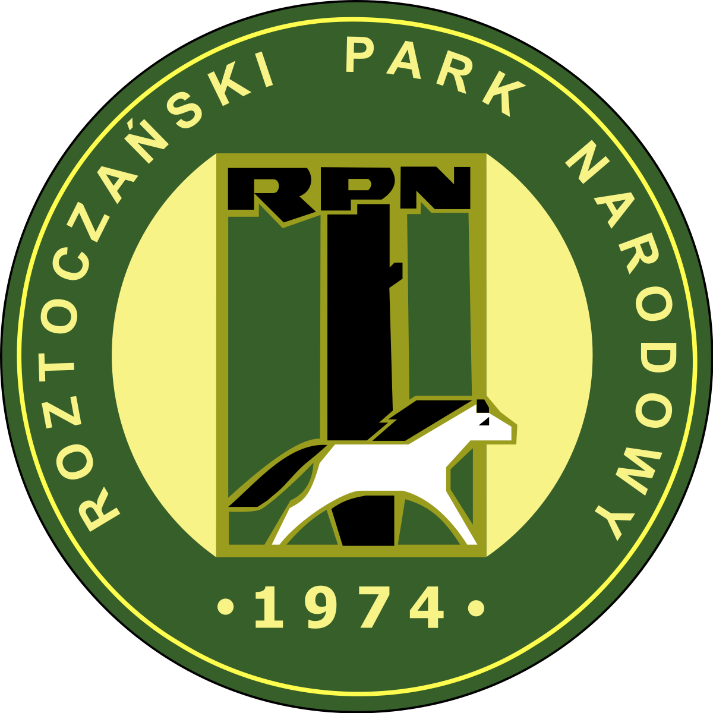

Roztoczański Park Narodowy
Park został utworzony w roku 1974 i ma powierzchnie 84,82 km². Znajduje się w południowo-wschodniej części Polski, na Roztoczu, w województwie lubelskim. Jego symbolem jest konik polski. W Roztoczańskim Parku Narodowym istnieje hodowla koników polskich. Jest najbardziej zalesionym parkiem w Polsce, lasy zajmują 95,5 % jego powierzchni. Obejmuje najcenniejsze przyrodniczo obszary Roztocza